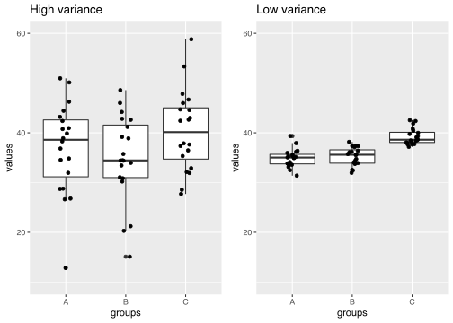
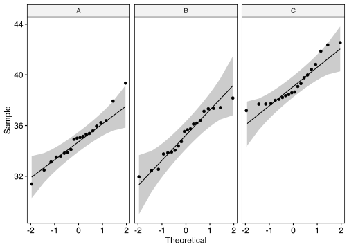
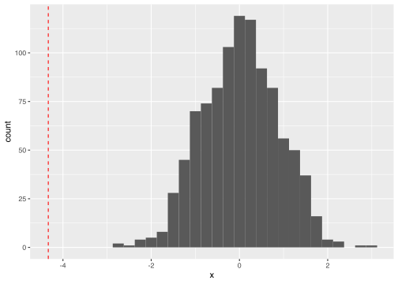

base R, ggplotsuppressPackageStartupMessages(library(tidyverse))
suppressPackageStartupMessages(library(magrittr))Еще примерчик на регулярные выражения (замена по паттерну)
some_text = '
Белоусов Всеволод Вадимович
- Выпускник кафедры биохимии Биологического факультета МГУ, доктор биологических наук
- Заведующий лабораторией редокс-регуляции РНИМУ имени Н.И. Пирогова
- Заведующий лабораторией молекулярных технологий ИБХ РАН
- Профессор РАН
- Член редколлегии журналов MethodX (Elsevier), Вестник РГМУ. Рецензент журналов FEBS journal, JACS, Chemical Science, Antioxidants & Redox signaling, Nature Communications, Nature Methods, Nature Chemical Biology, Scientific reports, JBC и мн. др., эксперт научных фондов РФФИ, РНФ, WellcomeTrust, European Research Council, Netherlands Organization for Scientific Research, The French National Research Agency и др.
- Преподаватель и лектор, “Advanced light microscopy techniques” практический курс, EMBL Heidelberg, 2015, 2016, 2017, 2018 , лектор, "Redox regulation of metabolic processes" FEBS advanced course, Spetses, Greece, 2016, лектор, “3rd advanced course in Optogenetics”, Institute Curie, Paris 2016.
- Организатор EMBO Conference on Redox Biology, Москва - Санкт-Петербург 2017, организатор визита Джеймса Уотсона в Россию с циклом научно-популярных лекций «70 нескучных лет в науке», Москва - Санкт-Петербург 2017 и других мероприятий
- автор большого числа научных публикаций
- лауреат многочисленных премий и наград
'
cat(str_replace_all(some_text, "\n- ([^\n]+)", "\n<li>\\1</li>"))##
## Белоусов Всеволод Вадимович
##
## <li>Выпускник кафедры биохимии Биологического факультета МГУ, доктор биологических наук</li>
## <li>Заведующий лабораторией редокс-регуляции РНИМУ имени Н.И. Пирогова</li>
## <li>Заведующий лабораторией молекулярных технологий ИБХ РАН</li>
## <li>Профессор РАН</li>
## <li>Член редколлегии журналов MethodX (Elsevier), Вестник РГМУ. Рецензент журналов FEBS journal, JACS, Chemical Science, Antioxidants & Redox signaling, Nature Communications, Nature Methods, Nature Chemical Biology, Scientific reports, JBC и мн. др., эксперт научных фондов РФФИ, РНФ, WellcomeTrust, European Research Council, Netherlands Organization for Scientific Research, The French National Research Agency и др.</li>
## <li>Преподаватель и лектор, “Advanced light microscopy techniques” практический курс, EMBL Heidelberg, 2015, 2016, 2017, 2018 , лектор, "Redox regulation of metabolic processes" FEBS advanced course, Spetses, Greece, 2016, лектор, “3rd advanced course in Optogenetics”, Institute Curie, Paris 2016.</li>
## <li>Организатор EMBO Conference on Redox Biology, Москва - Санкт-Петербург 2017, организатор визита Джеймса Уотсона в Россию с циклом научно-популярных лекций «70 нескучных лет в науке», Москва - Санкт-Петербург 2017 и других мероприятий</li>
## <li>автор большого числа научных публикаций</li>
## <li>лауреат многочисленных премий и наград</li>Визуальное сравнение 2 и более групп - пример с разной дисперсией
set.seed(1)
hi_var_anova =
tibble(
groups = rep(c("A", "B", "C"), each = 20),
values = c(
rnorm(20, mean = 35, 10),
rnorm(20, mean = 35, 10),
rnorm(20, mean = 39, 10)
)
)
hi_gg =
hi_var_anova %>%
ggplot(aes(x = groups, y = values)) +
geom_boxplot() +
geom_point(position = position_jitter(.1)) +
coord_cartesian(ylim=c(10, 60)) +
ggtitle("High variance")
library(tidyverse)
library(magrittr)
library(rstatix)##
## Attaching package: 'rstatix'## The following object is masked from 'package:stats':
##
## filterlow_var_anova =
tibble( # tidyverse: data.frame
groups = rep(c("A", "B", "C"), each = 20),
values = c(
rnorm(20, mean = 35, 2),
rnorm(20, mean = 35, 2),
rnorm(20, mean = 39, 2)
)
)
low_gg =
low_var_anova %>%
ggplot(aes(x = groups, y = values)) +
geom_boxplot() +
geom_point(position = position_jitter(.1)) +
coord_cartesian(ylim=c(10, 60)) +
ggtitle("Low variance")
suppressPackageStartupMessages(library(cowplot))
plot_grid(hi_gg, low_gg) # cowplot
Проверка предпосылок - нормальность и гомогенности дисперсии; размер выборок - влияет на формулу и тип ANOVA (I, II, III)
# проверка нормальности
library(ggpubr)##
## Attaching package: 'ggpubr'## The following object is masked from 'package:cowplot':
##
## get_legendlow_var_anova %>%
ggqqplot("values", facet = "groups") # ggpubr
# H0: распределение нормально, p.value > 0.05 => H0 верна
low_var_anova %>%
group_by(groups) %>%
summarise(normality = shapiro.test(values)$p.value)## # A tibble: 3 x 2
## groups normality
## <chr> <dbl>
## 1 A 0.729
## 2 B 0.470
## 3 C 0.0316# H0: дисперсия гомогенна, p.value > 0.05 => H0 верна
low_var_anova %>% levene_test(values ~ groups) # rstatix## Warning in leveneTest.default(y = y, group = group, ...): group coerced to
## factor.## # A tibble: 1 x 4
## df1 df2 statistic p
## <int> <int> <dbl> <dbl>
## 1 2 57 0.300 0.742# убираем warning: более правильные типы данных
low_var_anova %>% levene_test(values ~ as.factor(groups))## # A tibble: 1 x 4
## df1 df2 statistic p
## <int> <int> <dbl> <dbl>
## 1 2 57 0.300 0.742Непрерывные признаки - точечные оценки
low_var_anova %>%
group_by(groups) %>%
summarise(mean = mean(values),
median = median(values))## # A tibble: 3 x 3
## groups mean median
## <chr> <dbl> <dbl>
## 1 A 34.9 35.0
## 2 B 35.2 35.6
## 3 C 39.2 38.6Непрерывные признаки - интервальные оценки, доверительные интервалы
low_var_anova %>%
group_by(groups) %>%
summarise(mean = mean(values),
sd = sd(values),
q1 = quantile(values, .25),
q3 = quantile(values, .75),
n = n(),
ci_low = mean - 2* sd / sqrt(n),
ci_hi = mean + 2* sd / sqrt(n))## # A tibble: 3 x 8
## groups mean sd q1 q3 n ci_low ci_hi
## <chr> <dbl> <dbl> <dbl> <dbl> <int> <dbl> <dbl>
## 1 A 34.9 1.82 33.8 35.7 20 34.1 35.7
## 2 B 35.2 1.83 33.9 36.6 20 34.4 36.1
## 3 C 39.2 1.62 38.1 40.1 20 38.5 40.0Попарные сравнения + множественные сравнения
# все тесты из библиотеки rstatix
# effect size
low_var_anova %>%
cohens_d(values ~ groups) # (mean1 - mean2)/pooled_sd## # A tibble: 3 x 7
## .y. group1 group2 effsize n1 n2 magnitude
## * <chr> <chr> <chr> <dbl> <int> <int> <ord>
## 1 values A B 0.180 20 20 negligible
## 2 values A C 2.52 20 20 large
## 3 values B C 2.32 20 20 large# parametric: T-test (significance + multiple testing)
low_var_anova %>%
t_test(values ~ groups) # (mean1 - mean2)/SE*; SE = SD/sqrt(n)## # A tibble: 3 x 10
## .y. group1 group2 n1 n2 statistic df p p.adj
## * <chr> <chr> <chr> <int> <int> <dbl> <dbl> <dbl> <dbl>
## 1 valu… A B 20 20 -0.570 38.0 5.72e-1 5.72e-1
## 2 valu… A C 20 20 -7.96 37.5 1.40e-9 4.20e-9
## 3 valu… B C 20 20 -7.34 37.5 9.32e-9 1.86e-8
## # … with 1 more variable: p.adj.signif <chr># nonparametric: Wilcoxon test (Mann-Whitney)
low_var_anova %>%
wilcox_test(values ~ groups)## # A tibble: 3 x 9
## .y. group1 group2 n1 n2 statistic p p.adj p.adj.signif
## * <chr> <chr> <chr> <int> <int> <dbl> <dbl> <dbl> <chr>
## 1 values A B 20 20 170 4.29e-1 4.29e-1 ns
## 2 values A C 20 20 17 1.76e-8 3.52e-8 ****
## 3 values B C 20 20 9 1.41e-9 4.23e-9 ****# nonparametric: permutation test - меняем "подписи" и сравниваем различия
AC =
low_var_anova %>%
filter(groups %in% c("A", "C"))
means =
AC %>%
group_by(groups) %>%
summarise(mean = mean(values))
means## # A tibble: 2 x 2
## groups mean
## <chr> <dbl>
## 1 A 34.9
## 2 C 39.2means_diff = means$mean[1] - means$mean[2] # difference statistic
N = 1000
means_diffs_random = numeric(N)
for(i in 1:N){
means =
AC %>%
mutate(groups = sample(groups)) %>% # relabel
group_by(groups) %>%
summarise(mean = mean(values))
means_diffs_random[i] = means$mean[1] - means$mean[2] # H0 difference statistic
}
tibble(x = means_diffs_random) %>%
ggplot(aes(x=x)) +
geom_histogram() +
geom_vline(xintercept = means_diff, col = "red", linetype = "dashed")## `stat_bin()` using `bins = 30`. Pick better value with `binwidth`.
Разные типы T-теста
# 3 попарных сравнения + поправка на множественные сравнения
low_var_anova %>%
t_test(values ~ groups) # (mean1 - mean2)/SE*; SE = SD/sqrt(n)## # A tibble: 3 x 10
## .y. group1 group2 n1 n2 statistic df p p.adj
## * <chr> <chr> <chr> <int> <int> <dbl> <dbl> <dbl> <dbl>
## 1 valu… A B 20 20 -0.570 38.0 5.72e-1 5.72e-1
## 2 valu… A C 20 20 -7.96 37.5 1.40e-9 4.20e-9
## 3 valu… B C 20 20 -7.34 37.5 9.32e-9 1.86e-8
## # … with 1 more variable: p.adj.signif <chr># две группы => сравнение средних между двумя группами (есть различия?)
AC %>%
t_test(values ~ groups) # (mean1 - mean2)/SE*; SE = SD/sqrt(n)## # A tibble: 1 x 8
## .y. group1 group2 n1 n2 statistic df p
## * <chr> <chr> <chr> <int> <int> <dbl> <dbl> <dbl>
## 1 values A C 20 20 -7.96 37.5 0.0000000014# одна группа => сравниваем среднее группы с каким-то значением
A = AC %>% filter(groups == "A")
C = AC %>% filter(groups == "C")
# сравниваем среднее группы с конкретным значеним (равно или нет?)
A %>% t_test(values ~ 1, mu = 34) # p.value < 0.05 => видимо не равно## # A tibble: 1 x 7
## .y. group1 group2 n statistic df p
## * <chr> <chr> <chr> <int> <dbl> <dbl> <dbl>
## 1 values 1 null model 20 2.23 19 0.0379# сравниваем среднее группы с конкретным значеним (больше или нет?)
A %>% t_test(values ~ 1, mu = 34, alternative = "less") # p.value >> 0.05 => скорее всего больше## # A tibble: 1 x 7
## .y. group1 group2 n statistic df p
## * <chr> <chr> <chr> <int> <dbl> <dbl> <dbl>
## 1 values 1 null model 20 2.23 19 0.981# парный тест: сравниваем параллельные (связанные, зависимые) наблюдения
# например: вес одних и тех же мышей до и после приема препарата
AC %>% t_test(values ~ groups, paired = T)## # A tibble: 1 x 8
## .y. group1 group2 n1 n2 statistic df p
## * <chr> <chr> <chr> <int> <int> <dbl> <dbl> <dbl>
## 1 values A C 20 20 -10.7 19 0.00000000173# разбираемся с парным тестом
AC_delta = tibble(
"A = before" = A$values,
"C = after" = C$values,
delta = C$values - A$values # before - after
)
AC_delta## # A tibble: 20 x 3
## `A = before` `C = after` delta
## <dbl> <dbl> <dbl>
## 1 34.9 39.1 4.16
## 2 36.4 37.2 0.799
## 3 35.1 39.3 4.26
## 4 33.5 37.7 4.18
## 5 35.4 42.5 7.16
## 6 31.4 40.4 9.04
## 7 37.9 40.8 2.89
## 8 35.3 39.8 4.46
## 9 39.3 42.4 3.02
## 10 36.0 37.7 1.78
## 11 33.6 38.1 4.50
## 12 36.2 41.9 5.64
## 13 33.1 37.7 4.57
## 14 32.5 38.6 6.09
## 15 35.6 38.2 2.63
## 16 34.1 38.4 4.25
## 17 35.0 38.4 3.44
## 18 35.1 40.0 4.84
## 19 33.8 38.6 4.82
## 20 33.9 38.0 4.13# парный тест - это сравнение значений разницы с 0
AC_delta %>% t_test(delta ~ 1, mu = 0)## # A tibble: 1 x 7
## .y. group1 group2 n statistic df p
## * <chr> <chr> <chr> <int> <dbl> <dbl> <dbl>
## 1 delta 1 null model 20 10.7 19 0.00000000173